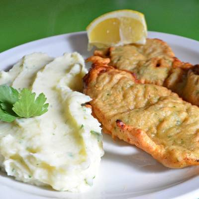

Milanesas marineras

Title of description
Rinde 6 porciones.
Se puede acompañar con pure de papa, batata, zapallo, o alguna ensalada.
Ingredientes
- 1kg de nalga, bola de lomo, o cuadrada. Tambien se puede hacer de pollo.
- 4 huevos.
- 2 dientes de ajo.
- Perejil cantidad necesaria.
- sal fina.
- pimienta blanca molida.
- Harina 000 (comun) cantidad necesaria.
- Aceite de girasol para freir.
- Un chorro de leche
Procedimiento
- Limpiar la carne, salarla de ambos lados.
- Batir los huevos con ajo y perejil picado, agregar un chorro de leche.
- Pasar la carne por la harina, luego pasarla por la mezcla con huevos, y volver a pasar por harina.
- Freir con fuego fuerte.